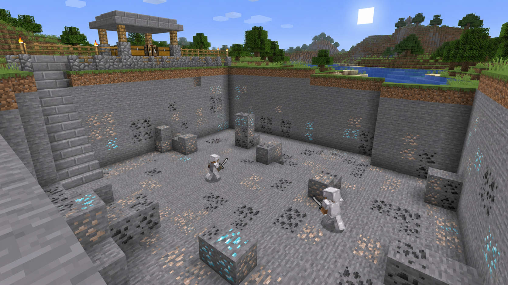

Oyunlar
Oyun rehberleri ve test erişimi bilgileri.

Survival
Arazi koruma, meslekler ve oyuncu pazarı.
Survival rehberi Temsili görsel
Temsili görselSkyblock
Kendi adanı geliştir; görevler, siparişler ve oyuncu ticaretiyle ilerle. Henüz herkese açık değil.
Test rehberini aç
Rob's Village
Kurt köylü, gizli roller ve oylama.
Oyun ve roller
Temsili görselBox PvP
Oyuna açık · Kehribar Kalesi'nde cevher takası, güvenli spawn ve yenilenen madenler.
Box PvP rehberi Temsili görsel
Temsili görselPillars
Oyuna açık · 2–8 oyuncu, 5 saniyede bir rastgele eşya ve en fazla 5 dakikalık turlar.
Pillars rehberiİlk durağın: oyun lobisi
Java veya Bedrock ile tek adresten bağlan. Pusula menüsünden oyununu seç.